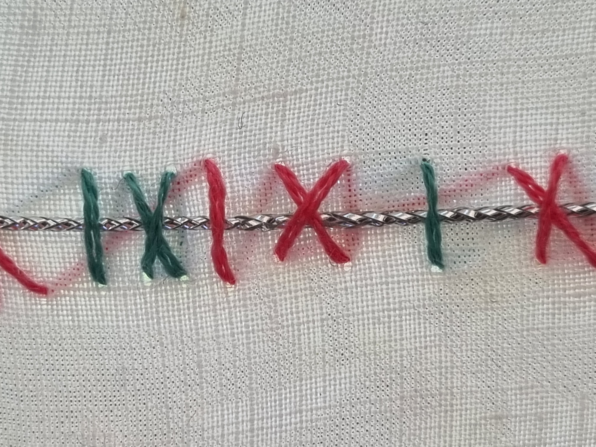
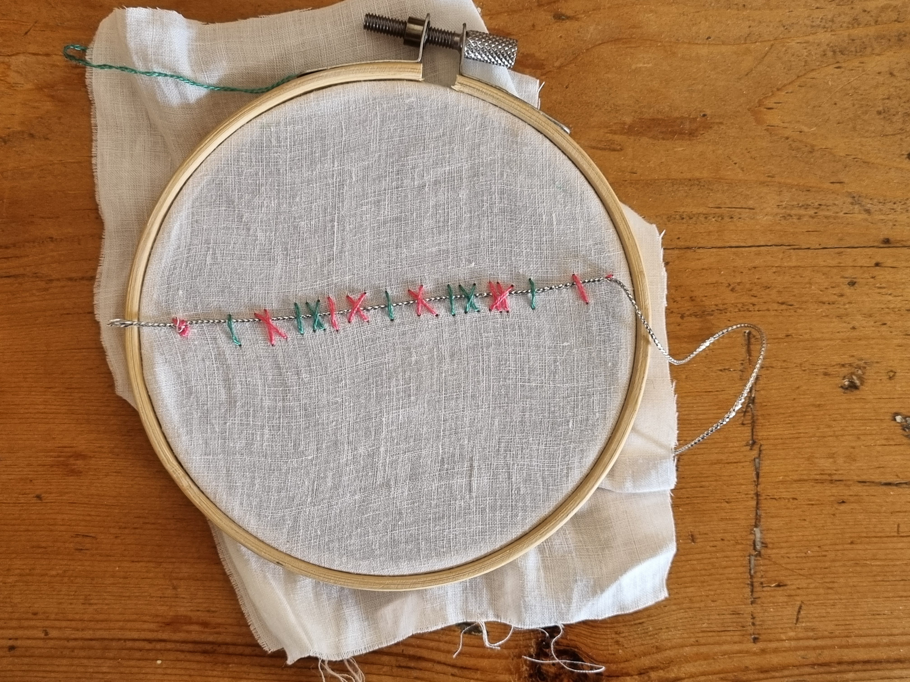

Agreement is not a synonym for dialogue.
This case study focuses on one small strand of my wider AI-supported portfolio process: a material analysis of thirteen dialogues with Claude, used to explore how critical human/AI exchange might be visualised and reflected upon.
In constructing this portfolio I have worked in dialogue with a number of AI models, moving from ChatGPT to Claude to Codex to support ideation, drafting and coding the site.
My working AI practice uses the models not as interchangeable tools being benchmarked, but as differently positioned collaborators within a human-directed process. I assign them roles according to their tendencies and my use-patterns, then retain responsibility for synthesis, judgement and decision-making.
I was curious to discover how this working practice might be materialised, and also make the making process more transparent, particularly given the external context of academic usage of AI occasionally being shrouded in mystery.
This case study is an attempt to look inside the ‘black box’ using journaling, note-taking, data humanism and material physicalisation.
How might the kind of abstract, textual dialogue used between creative practitioner and machine be visually, materially represented to support understanding and reflection of AI/human interactions?

Across thirteen dialogues, Claude produced approximately eleven words for every one I typed. This ratio is descriptively interesting but analytically limited: it measures volume rather than judgement, direction, or conceptual labour.
Claude suggested couching — an embroidery technique which echoes data humanism annotation techniques — as a material way to represent the types of interaction in a short, contained conversation. This echoes Parker’s exploration of how embroidery shaped feminine identity through history and aligns with critical data feminism.
Claude used a template analysis (King, 2004) to develop an initial way to code the conversation. This was refined using Nystrand’s work on ‘uptake’ as a model for critical conversations. Turn count (the machine learning term for how many user prompts and machine responses are present in a conversation) was rejected as too linear a model to be useful, and instead a typology of ‘response types’ was built based on the conversation, which privileged critical disagreement over agreement as a method to generate useful results.
Claude generated material, introduced intellectual triangulation and pushed back at key points, while I designed and steered the dialogue through purposeful prompting: testing, challenging, triangulating, revising and deciding through a process model I have developed and refined in collaboration with ChatGPT.
Based on this typology, the conversation was visually depicted using diagrammatic annotation, which was then translated to embroidery — physical ‘couching’ of the thread of the conversation, each ‘turn’ marked by the notation system.
Physicalising the data through a material, embroidered metaphor speaks to ideas of transformation, dialogue and critical data practice. It visualises human/AI interaction in an embodied and digital form, ‘coding’ the conversation both conceptually and physically.
Straight — generative · slant — evaluative · cross — redirective · magenta — maker · verdigris — machine

The conversation patterns showed that both the model and the user evaluated and redirected this short conversation — the user evaluating more frequently than the model, and both user and model critically redirecting the process. This suggests that the AI/user interaction can become more critical in dialogue than the standard tropes of user/machine suggest, when given dialogic conditions which specifically model critical dialogue and questioning.
Minor Deities ends under glass; Botanica holds worlds in it; the consultation sets it down. This work was made through glass — every stitch agreed across a screen before any thread was cut — and the cloth exists where the glass is not. A couching stitch holds without closing: the thread stays visible, and can always be unpicked. Classification without changed conditions is containment, not care. Held is not the same as contained; the difference is whether the line can still be seen.
Notation suggested by machine · notation redesigned, codes decided, text written and cloth sewn by the maker · site coded by machine